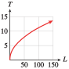
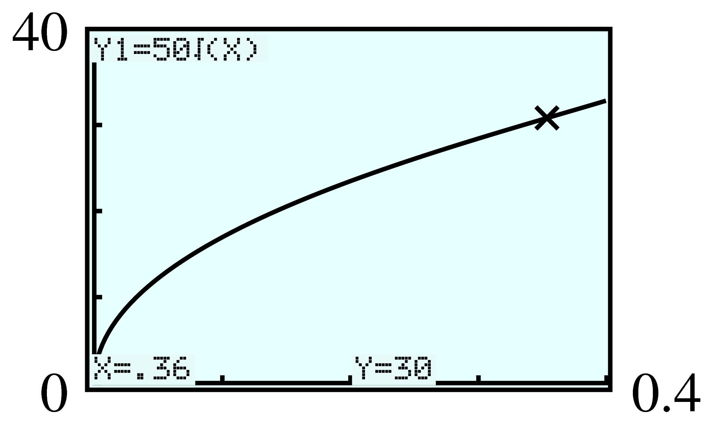
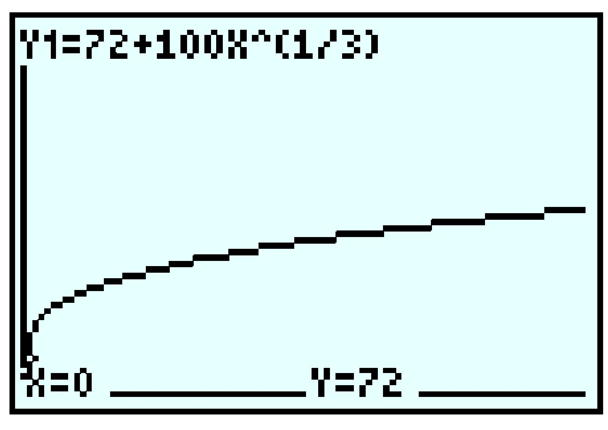

Exercises 4.10 Homework 3.3
¶Find the indicated root without using a calculator; then check your answers.
Find the indicated power without using a calculator; then check your answers.
Write each expression in radical form.
9.
\(3^{1/2} \)
\(4x^{1/3} \)
\((4x)^{0.2} \)
\(\sqrt{3} \)
\(4\sqrt[3]{x} \)
\(\sqrt[5]{4x} \)
10.
\(7^{1/2} \)
\(3x^{1/4} \)
\((3x)^{0.25} \)
11.
\(6^{-1/3} \)
\(3(xy)^{-0.125} \)
\((x-2)^{1/4} \)
\(\dfrac{1}{\sqrt[3]{6}} \)
\(\dfrac{3}{\sqrt[8]{xy}} \)
\(\sqrt[4]{x-2} \)
12.
\(8^{-1/4} \)
\(y(5x)^{-0.5} \)
\((y+2)^{1/3} \)
Write each expression in exponential form.
13.
\(\sqrt{7} \)
\(\sqrt[3]{2x} \)
\(2\sqrt[5]{z} \)
\(7^{1/2} \)
\((2x)^{1/3} \)
\(2z^{1/5} \)
14.
\(\sqrt{5} \)
\(\sqrt[3]{4y} \)
\(5\sqrt[3]{x} \)
15.
\(\dfrac{-3} {\sqrt[4]{6} }\)
\(\sqrt[4]{x-3y} \)
\(\dfrac{-1} {\sqrt[5]{1+3b} } \)
\(-3\cdot 6^{-1/4} \)
\((x-3y)^{1/4} \)
\(-(1+3b)^{-1/5} \)
16.
\(\dfrac{2} {\sqrt[5]{3} } \)
\(\sqrt[3]{y+2x} \)
\(\dfrac{-1} {\sqrt[4]{3a-2b} } \)
Simplify.
17.
\(\left(\sqrt[3]{125} \right)^3 \)
\(\left(\sqrt[4]{2} \right)^4 \)
\(\left(3\sqrt{7} \right)^2 \)
\(\left(-x^2\sqrt[3]{2x} \right)^3 \)
\(125\)
\(2\)
\(63\)
\(-2x^7\)
18.
\(\left(\sqrt[4]{16} \right)^4 \)
\(\left(\sqrt[3]{6} \right)^3 \)
\(\left(2\sqrt[3]{12} \right)^3 \)
\(\left(-a^3\sqrt[4]{a^2} \right)^4 \)
Use a calculator to approximate each irrational number to the nearest thousandth.
19.
\(2^{1/2} \)
\(\sqrt[3]{75} \)
\(\sqrt[4]{1.6} \)
\(365^{-1/3} \)
\(0.006^{-0.2} \)
\(1.414\)
\(4.217\)
\(1.125\)
\(0.140\)
\(2.782 \)
20.
\(3^{1/2} \)
\(\sqrt[4]{60} \)
\(\sqrt[3]{1.4} \)
\(1058^{-1/5} \)
\(1.05^{-0.1} \)
Write each expression as a power function.
21.
\(g(x)=3.7 \sqrt[3]{x} \)
\(H(x)=\sqrt[4]{85x} \)
\(F(t)=\dfrac{25}{\sqrt[5]{t}} \)
\(g(x) = 3.7x^{1/3} \)
\(H(x) = 85^{1/4}x^{1/4} \)
\(F(t) = 25t^{-1/5} \)
22.
\(h(v)=12.7 \sqrt{v} \)
\(F(p)=\sqrt[3]{2.9p} \)
\(G(w)=\dfrac{5}{8\sqrt[8]{w}} \)
Solve.
23.
\(6.5x^{1/3} + 3.8 = 33.05\)
\(x = 91.125\)
24.
\(9.8 - 76x^{1/4} + 15 = 9.6\)
25.
\(4(x + 2)^{1/5} = 12\)
\(x = 241\)
26.
\(-9(x - 3)^{1/5} = 18\)
27.
\((2x - 3)^{-1/4} = \dfrac{1}{2}\)
\(x = \dfrac{19}{2} \)
28.
\((5x + 2)^{-1/3} = \dfrac{1}{4}\)
29.
\(\sqrt[3]{x^2-3} = 3\)
\(x = \pm\sqrt{30} \)
30.
\(\sqrt[4]{x^3-7} = 2\)
Solve each formula for the indicated variable.
31.
\(T = 2\pi\sqrt{\dfrac{L}{g}}\) for \(L\)
\(L=\dfrac{gT^2}{4\pi^2} \)
32.
\(T = 2\pi \sqrt{\dfrac{m}{k}}\) for \(m\)
33.
\(r = \sqrt{t^2-s^2}\) for \(s\)
\(s=\pm\sqrt{t^2-r^2} \)
34.
\(c = \sqrt{a^2-b^2}\) for \(b\)
35.
\(r = \sqrt[3] {\dfrac{3V}{4\pi}}\) for \(V\)
\(v=\dfrac{4}{3}\pi r^3 \)
36.
\(d = \sqrt[3] {\dfrac{16Mr^2}{m}}\) for \(M\)
37.
\(R = \sqrt[4] {\dfrac{8Lvf}{\pi p}}\) for \(p\)
\(p=\dfrac{8Lvf}{\pi R^4} \)
36.
\(T = \sqrt[4] {\dfrac{E}{SA}}\) for \(A\)
39.
The period of a pendulum is the time it takes for the pendulum to complete one entire swing, from left to right and back again. The greater the length, \(L\text{,}\) of the pendulum, the longer its period, \(T\text{.}\) In fact, if \(L\) is measured in feet, then the period is given in seconds by
Write the formula for \(T\) as a power function in the form \(f (x) = kx^p\text{.}\)
Suppose you are standing in the Convention Center in Portland, Oregon, and you time the period of its Foucault pendulum (the longest in the world). Its period is approximately \(10.54\) seconds. How long is the pendulum?
Choose a reasonable domain for the function \(T = f (L)\) and graph the function.
\(T=\dfrac{2\pi}{\sqrt{32}}L^{1/2} \)
\(90\) feet
- 
40.
If you are flying in an airplane at an altitude of \(h\) miles, on a clear day you can see a distance of \(d\) miles to the horizon, where
Write the formula for \(d\) as a power function in the form \(f (x) = kx^p\text{.}\)
Choose a reasonable domain for the function \(d = f (h)\) and graph the function.
At what altitude will you be able to see for a distance of \(100\) miles? How high is that in feet?
41.
If you walk in the normal way, your maximum speed, \(v\text{,}\) in meters per second, is limited by the length of your legs, \(r\text{,}\) according to the formula
where the constant \(g\) is approximately \(10\) meters per second squared. (Source: Alexander, 1992)
A typical adult man has legs about \(0.9\) meter long. How fast can he walk?
A typical four-year-old has legs \(0.5\) meter long. How fast can she walk?
Graph maximum walking speed as a function of leg length.
Race-walkers can walk as fast as \(4.4\) meters per second by rotating their hips so that the effective length of their legs is increased. What is that effective length?
On the Moon the value of \(g\) is \(1.6\) meters per second squared. How fast can a typical adult man walk on the Moon?
\(3\) meters per second
\(b\approx 2.2\) meters per second

\(1.9\) meters
\(1.2\)meters per second
42.
When a ship moves through the water, it creates waves that impede its own progress. Because of this resistance, there is an upper limit to the speed at which a ship can travel, given, in knots, by
where \(L\) is the length of the vessel, in feet. (Source: Gilner, 1972)
Graph maximum speed as a function of vessel length.
The world's largest ship, the oil tanker Jahre Viking, is \(1054\) feet long. What is its top speed?
As a ship approaches its maximum speed, the power required increases sharply. Therefore, most merchant ships are designed to cruise at speeds no higher than \(v_c = 0.8\sqrt{L}\text{.}\) Graph \(v_c\) on the same axes with \(v_\text{max}\text{.}\)
What is the cruising speed of the Jahre Viking? What percent of its maximum speed is that?
43.
A rough estimate for the radius of the nucleus of an atom is provided by the formula
where \(A\) is the mass number of the nucleus and \(k\approx 1.3 \times 10^{-13}\) centimeter.
Estimate the radius of the nucleus of an atom of iodine-127, which has mass number \(127\text{.}\) If the nucleus is roughly spherical, what is its volume?
The nuclear mass of iodine-127 is \(2.1 \times 10^{-22}\) gram. What is the density of the nucleus? (Density is mass per unit volume.)
-
Complete the table of values for the radii of various radioisotopes.
Element Carbon Potassium Cobalt Technetium Radium Mass
number, \(A\)\(14\) \(40\) \(60\) \(99\) \(226\) Radius, \(r\) \(\) \(\) \(\) \(\) \(\) Sketch a graph of \(r\) as a function of \(A\text{.}\) (Use units of \(10^{-13}\) centimeter on the vertical axis.)
\(6.5\times 10^{-13}\) cm; \(1.17\times 10^{-36} \text{ cm}^3\)
\(1.8\times 10^{14} g/\text{cm}^3\)
Element Carbon Potassium Cobalt Technetium Radium Mass
number, \(A\)\(14\) \(40\) \(60\) \(99\) \(226\) Radius, \(r\)
(\(10^{-13}\) cm)\(3.1\) \(4.4\) \(5.1\) \(6\) \(7.9\) 
44.
In the sport of crew racing, the best times vary closely with the number of men in the crew, according to the formula
where \(n\) is the number of men in the crew and \(t\) is the winning time, in minutes, for a \(2000\)-meter race.
If the winning time for the \(8\)-man crew was \(5.73\) minutes, estimate the value of \(k\text{.}\)
-
Complete the table of values of predicted winning times for the other racing classes.
Size of crew, \(n\) \(1\) \(2\) \(4\) \(8\) Winning time, \(t\) \(\hphantom{0000} \) \(\hphantom{0000} \) \(\hphantom{0000} \) \(\hphantom{0000} \) Sketch a graph of \(t\) as a function of \(n\text{.}\)
In Problems 45–48, one quantity varies directly with the square root of the other, that is, \(y = k\sqrt{x}\text{.}\)
Find the value of \(k\) and write a power function relating the variables.
Use your function to answer the question.
Graph your function and verify your answer to part (b) on the graph.
45.
The stream speed necessary to move a granite particle is a function of the diameter of the particle; faster river currents can move larger particles. The table shows the stream speed necessary to move particles of different sizes. What speed is needed to carry a particle with diameter \(0.36\) centimeter?
| Diameter, \(d\) (cm) | Speed, \(s\) (cm/sec) |
| \(0.01\) | \(5\) |
| \(0.04\) | \(10\) |
| \(0.09\) | \(15\) |
| \(0.16\) | \(20\) |
\(s = 50\sqrt{d}\)
\(30\) cm/sec
- 
46.
The speed at which water comes out of the spigot at the bottom of a water jug is a function of the water level in the jug; it slows down as the water level drops. The table shows different water levels and the resulting flow speeds. What is the flow speed when the water level is at \(16\) inches?
| Level, \(L\) (in) | Speed, \(s\) (gal/min) |
| \(9\) | \(1.5\) |
| \(6.25\) | \(1.25\) |
| \(4\) | \(1\) |
| \(2.25\) | \(0.75\) |
47.
The rate, \(r\text{,}\) in feet per second, at which water flows from a fire hose is a function of the water pressure, \(P\text{,}\) in psi (pounds per square inch). What is the rate of water flow at a typical water pressure of \(60\) psi?
| \(P\) (psi) | \(10\) | \(20\) | \(30\) | \(40\) |
| \(r\) (ft/sec) | \(38.3\) | \(54.1\) | \(66.3\) | \(76.5\) |
\(r = 12.1\sqrt{P}\)
\(94\) ft/sec

48.
When a layer of ice forms on a pond, the thickness of the ice, \(d\text{,}\) in centimeters, is a function of time, \(t\text{,}\) in minutes. How thick is the ice after \(3\) hours?
| \(t\) (min) | \(10\) | \(30\) | \(40\) | \(60\) |
| \(d\) (cm) | \(0.50\) | \(0.87\) | \(1.01\) | \(1.24\) |
49.
Membership in the County Museum has been increasing since it was built in \(1980\text{.}\) The number of members is given by the function
where \(t\) is the number of years since \(1980\text{.}\)
How many members were there in \(1990\text{?}\) In \(2000\text{?}\)
In what year will the museum have \(400\) members? If the membership continues to grow according to the given function, when will the museum have \(500\) members?
Graph the function \(M(t)\text{.}\) How would you describe the growth of the membership over time?
\(287\text{;}\) \(343\)
\(2015\text{;}\) \(2058\)
-
The membership grows rapidly at first but is growing less rapidly with time.

50.
Due to improvements in technology, the annual electricity cost of running most major appliances has decreased steadily since \(1970\text{.}\) The average annual cost of running a refrigerator is given, in dollars, by the function
where \(t\) is the number of years since \(1970\text{.}\)
How much did it cost to run a refrigerator in \(1980\text{?}\) In \(1990\text{?}\)
When was the cost of running a refrigerator half of the cost in \(1970\text{?}\) If the cost continues to decline according to the given function, when will it cost \(\$50\) per year to run a refrigerator?
Graph the function \(C(t)\text{.}\) Do you think that the cost will continue to decline indefinitely according to the given function? Why or why not?
51.
Match each function with the description of its graph in the first quadrant.
\(f (x) = x^2\)
\(f (x) = x^{-2}\)
\(f (x) = x^{1/2}\)
Increasing and concave up
Increasing and concave down
Decreasing and concave up
Decreasing and concave down
I
III
II
none
52.
In each pair, match the functions with their graphs.
53.
-
Graph the functions
\begin{equation*} y_1 = x^{1/2},~~ y_2 = x^{1/3},~~ y_3 = x^{1/4},~~ y_4 = x^{1/5} \end{equation*}in the window
\begin{align*} {\text{Xmin}} \amp = 0 \amp\amp {\text{Xmax}} = 100\\ {\text{Ymin}} \amp = 0 \amp\amp {\text{Ymax}} = 10 \end{align*}What do you observe?
Use your graphs to evaluate \(100^{1/2}\text{,}\) \(100^{1/3}\text{,}\) \(100^{1/4}\text{,}\) and \(100^{1/5}\text{.}\)
Use your calculator to evaluate \(100^{1/n}\) for \(n = 10\text{,}\) \(n = 100\text{,}\) and \(n = 1000\text{.}\) What happens when \(n\) gets large?
The graphs of \(x^{1/n}\) become closer and closer to horizontal when \(n\) increases (for \(x\gt 1\)).
\(10,~ 4.64,~ 3.16,~ 2.51\)
\(1.58, 1.05,~ 1.005\text{;}\) the values decrease towards \(1\text{.}\)
54.
-
Graph the functions
\begin{equation*} y_1 = x^{1/2},~~ y_2 = x^{1/3},~~ y_3 = x^{1/4},~~ y_4 = x^{1/5} \end{equation*}in the window
\begin{align*} {\text{Xmin}} \amp = 0 \amp\amp {\text{Xmax}} = 1\\ {\text{Ymin}} \amp = 0 \amp\amp {\text{Ymax}} = 1 \end{align*}What do you observe?
Use your graphs to evaluate \(0.5^{1/2}\text{,}\) \(0.5^{1/3}\text{,}\) \(0.5^{1/4}\text{,}\) and \(0.5^{1/5}\text{.}\)
Use your calculator to evaluate \(0.5^{1/n}\) for \(n = 10\text{,}\) \(n = 100\text{,}\) and \(n = 1000\text{.}\) What happens when \(n\) gets large?
For Problems 55–58, graph each set of functions in the given window. What do you observe?
55.
\(y_1 = \sqrt{x}\text{,}\) \(y_2 = x^2\text{,}\) \(y_3 = x\)
The graphs of \(y_1\) and \(y_2\) are symmetric about \(y_3 = x\text{.}\)
56.
\(y_1 = \sqrt[3]{x}\text{,}\) \(y_2 = x^3\text{,}\) \(y_3 = x\)
57.
\(y_1 = \sqrt[5]{x}\text{,}\) \(y_2 = x^5\text{,}\) \(y_3 = x\)
The graphs of \(y_1\) and \(y_2\) are symmetric about \(y_3 = x\text{.}\)
58.
\(y_1 = \sqrt[4]{x}\text{,}\) \(y_2 = x^4\text{,}\) \(y_3 = x\)
59.
-
Graph the functions \(f (x) = 4 \sqrt[3]{x - 9}\) and \(g(x) = 12\) in the window
\begin{align*} {\text{Xmin}} \amp = 0 \amp\amp {\text{Xmax}} = 47\\ {\text{Ymin}} \amp = -8 \amp\amp {\text{Ymax}} = 16 \end{align*} Use the graph to solve the equation \(4 \sqrt[3]{x - 9}=12\text{.}\)
Solve the equation algebraically.

\(x=36\)
60.
-
Graph the functions \(f (x) = 6+2 \sqrt[4]{12-x}\) and \(g(x) = 10\) in the window
\begin{align*} {\text{Xmin}} \amp = -27 \amp\amp {\text{Xmax}} = 20\\ {\text{Ymin}} \amp = 4 \amp\amp {\text{Ymax}} = 12 \end{align*} Use the graph to solve the equation \(6+2 \sqrt[4]{12-x}=10\text{.}\)
Solve the equation algebraically.
61.
Write \(\sqrt{x}\) with a fractional exponent.
Write \(\displaystyle{\sqrt{\sqrt{x}}}\) with a fractional exponents.
Use the laws of exponents to show that \(\displaystyle{\sqrt{\sqrt{x}}=\sqrt[4]{x}} \text{.}\)
\(x^{1/2}\)
\(\left(x^{1/2} \right)^{1/2} \)
- \begin{equation*} \begin{aligned}[t] \sqrt{\sqrt{x}}\amp =\left(x^{1/2} \right)^{1/2} \amp\amp\text{By definition of fractional exponents.}\\ \amp=x^{1/4} \amp\amp\text{By the third law of exponents.}\\ \amp=\sqrt[4]{x} \amp\amp\text{By definition of fractional exponents.} \end{aligned} \end{equation*}
62.
Write \(\sqrt[3]{x}\) with a fractional exponent.
Write \(\displaystyle{\sqrt{\sqrt[3]{x}}}\) with a fractional exponents.
Use the laws of exponents to show that \(\displaystyle{\sqrt{\sqrt[3]{x}}=\sqrt[6]{x}} \text{.}\)
Write each expression as a sum of terms of the form \(kx^p\text{.}\)
63.
\(\dfrac{\sqrt{x}}{4}-\dfrac{2}{\sqrt{x}}+\dfrac{x}{\sqrt{2}}\)
\(\displaystyle{\frac{1}{4}x^{1/2}-2x^{-1/2}+\frac{1}{\sqrt{2}}x}\)
64.
\(\dfrac{\sqrt{3}}{x}+\dfrac{3}{\sqrt{x}}-\dfrac{\sqrt{x}}{3}\)
65.
\(\dfrac{6-\sqrt[3]{x}}{2\sqrt[3]{x}}\)
\(\displaystyle{3x^{-1/3}-\frac{1}{2}}\)
66.
\(\dfrac{\sqrt[4]{x}+2}{2\sqrt[4]{x}}\)
67.
\(x^{-0.5}\left(x+x^{0.25}-x^{0.5} \right)\)
\(x^{0.5} + x^{-0.25} - x^0\)
68.
\(x^{0.5}\left(x^{-1}+x^{-0.5}+x^{-0.25} \right)\)